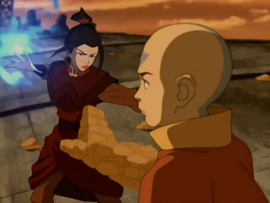
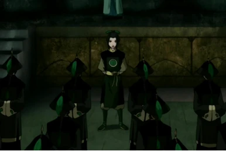

Peleas
 Después del fracaso del Asedio del Norte, el Señor del Fuego Ozai, le encargó una tarea a su hija, traer de vuelta a a su tío y a su hermano por su traición e ineficacia. En una pequeña aldea de la Nación del Fuego, cerca de un puerto lujoso, ella intentó, casi con éxito, atraparlos, pero su fracaso y la subsecuente sugerencia de Lo y Li de abandonar la Procesión Real y buscar una fuerza más compacta, hicieron pensar a Azula en dos de sus amigas de la infancia
Reclutando
Para empezar, Azula se dirigió a un circo en la Nación del Fuego, donde su amiga, Ty Lee, realizaba actos acrobáticos en la cuerda floja. Al encontrarse con Azula, ella se sintió muy feliz, pero declinó la oferta de la princesa, ya que se sentía a gusto en el circo. Azula fingió estar de acuerdo con la decisión de su amiga, pero al momento de retirarse, le dijo a Ty Lee que no se iría sin ver su acto esa noche, muy al pesar de la acróbata.Durante el acto, Azula hizo su mejor intento para asustar y poner incómoda a Ty Lee, cosa que funcionó, y al finalizar el acto, la joven acordó unirse a la princesa de la Nación del Fuego en su misión.